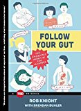
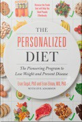
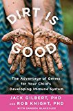
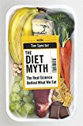
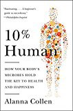
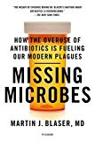
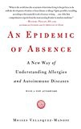
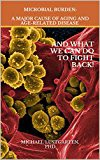
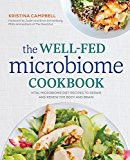

14 My favorite books about the microbiome
The number of books about the microbiome have exploded in the past few years, but I’ve tried to read (or at least skim) every book I can find. If you’re a newcomer who would like to come up to speed, here’s my ranked list of the best books as of today (early 2020).
- Knight, Rob Follow Your Gut: How the Ecosystem in Your Gut Determines Your Health, Mood, and More

At only 120 pages, this is the most concise summary of what’s known — and not known — about the microbiome. Written by one of the scientists behind the American Gut Project, it’s a readable and fascinating overview of the facts and a great first introduction. If you only read one book, this is it.
- Segal, Eran The Personalized Diet: The Pioneering Program to Lose Weight and Prevent Disease

No two bodies respond to food the same way, and the scientists who discovered some important links to the microbiome have written the most actionable, microbiome-informed book I know about weight loss and diabetes prevention. Focusing on glucose response, they describe their most famous experiments in easy-to-read but well-informed scientific language. Learn why artificial sweeteners aren’t good for you, why averages are a poor way to choose your diet, and simple tricks to measure precisely what will work for you.
- Gilbert, Jack Dirt Is Good: The Advantage of Germs for your Child’s Developing Immune System”

The most practical, up-to-date book on what works and doesn’t work. Written for parents as a guide to ensure a child’s microbiome is as healthy as possible, you’ll find dozens of yes/no practical answers to everyday questions: “Should we get a dog?” (yes), “Are GMOs safe?” (yes), “What works for diaper rash?” (probiotic yogurt) and much more. Because, as the book points out, the microbiome changes little after about age three, most of the advice is general enough to apply to adults as well.
- Spector, Tim The Diet Myth: Why the Secret to Health and Weight Loss is Already in Your Gut

Another excellent one written by a practicing scientist and a good complement to Follow Your Gut. The author’s concise writing style packs multiple interesting examples and facts on each page. Divided into chapters based on type of food, I learned about what’s proven and what’s unknown about the effects of different diets on health.
- Collen, Alanna 10% Human: How Your Body’s Microbes Hold the Key to Health and Happiness

Another great overview that explains to the ordinary person the implications of the microbiome. Well-written, full of interesting facts, but sticks strictly to mainstream science. For example, although the author explains the concept of “leaky gut”, she observes it skeptically as an unproven hypothesis, rather than jump whole-hog into diagnoses. Best parts discuss the gut role on behavior (“Mind Control”), with detailed examples from autism research, Whipple’s Disease, and more. The book includes a list of the highest-quality references, but unfortunately it’s not complete, so many of the facts are hard to follow up.
- Blaser, Martin Missing Microbes: How the Overuse of Antibiotics Is Fueling Our Modern Plagues

The author is a long-time, highly-cited microbe researcher who did much of the original work on Helicobacter pylori, the stomach bacterium implicated in ulcers. But studying these germs up close for so long has made Dr. Blaser much more nuanced about what constitutes “good” and “bad”. Quoting the Inuit, “Wolves keep the caribou healthier”, he makes the case that many modern ailments like allergies or diabetes maybe caused by the lack of microbes, not their presence.
- Velasquez-Manoff, Moises An Epidemic of Absence: A New Way of Understanding Allergies and Autoimmune Diseases

Another book that explains a provocative idea that our immune systems need regular stimulation by parasites and other infectious agents, or we risk unpleasant side effects in the form of allergies, diabetes, and many other nasty conditions. The remarkable correlation between the hygiene of modernity and the rise of autoimmune diseases makes for powerful evidence that science is far behind in understanding all the consequences of our current lifestyles.
- Lustgarten, Michael Infectious Burden: The Cause Of Aging And Age-Related Disease

14.1 Other Books Worth Having
- Campbell, Kristina The Well-Fed Microbiome Cookbook

If you’d like a shorter, summarized version of the science as well as practical suggestions for family meals, get this book. The author writes for gutmicrobiotaforhealth.com, which you should check for more up-to-date information.
- Axe, Josh Eat Dirt
I was surprised at how much new and practical information was packed into this book.Although the author is not a practicing scientist himself, he summarizes new ideas efficiently and I learned much about medicinal plants, non-Western treatments, and essential oils.
14.2 Other
Just about any new health book from the past few years will touch on the microbiome, but I didn’t find much specifically microbiome-related that was useful or new in books by David Asprey (“The Bulletproof Diet”), Tim Ferriss’ Four Hour Body, or Chris Kresser’s Paleo Code. You may find these books useful for other reasons, like the detailed discussions of specific foods, but you’ll learn little about the microbiome.